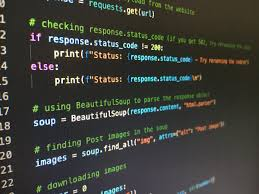
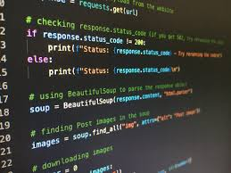

Skills
HTML
I have a strong foundation in HTML, which is the backbone of all web pages. My proficiency in HTML allows me to create well-structured, semantic web pages that are easy to navigate and maintain. I have used HTML extensively in my projects, including the "Divyang Disha Seva Trust" website, where I structured the content to ensure accessibility and clarity for all users.


CSS
With CSS, I bring life to the structure created by HTML. I am skilled in designing responsive layouts that work seamlessly across various devices, ensuring a consistent and user-friendly experience. My experience with CSS includes working with Flexbox and Grid to create dynamic and flexible layouts. Additionally, I am proficient in using CSS for animations and transitions to enhance the visual appeal of web applications.


JavaScript
JavaScript is my go-to language for adding interactivity and dynamic content to websites. I have used JavaScript to create interactive elements such as forms, sliders, and dynamic content updates without page reloads. My understanding of JavaScript also extends to working with APIs to fetch and display data dynamically. In the "Personal Finance Manager" project, I utilized JavaScript to manage user inputs and generate real-time financial reports.

Python (Basic)
While I am still expanding my knowledge of Python, I have used it effectively in back-end development, particularly for data processing and logic implementation. My experience with Python includes developing the core functionality of the "Personal Finance Manager" project, where I implemented algorithms for tracking expenses, managing budgets, and generating financial reports. Python’s simplicity and readability make it a powerful tool in my development toolkit, especially when combined with other technologies.


 

Version Control (Git & GitHub)
Version control is an essential part of my workflow, ensuring that my code is well-organized and that I can track changes over time. I am proficient in using Git for version control and GitHub for collaboration and code hosting. This skill is particularly valuable when working on team projects or contributing to open-source repositories. My GitHub profile showcases the various projects I have worked on and serves as a portfolio of my technical skills.
Responsive Design
I am well-versed in creating websites that provide an optimal viewing experience across a wide range of devices, from mobile phones to desktop monitors. Using a combination of media queries, flexible grids, and fluid images, I ensure that my designs are not only visually appealing but also functional and accessible on all devices.